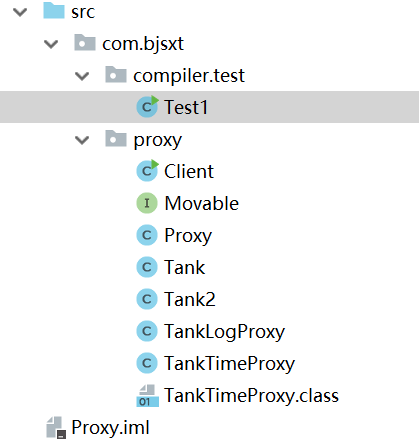
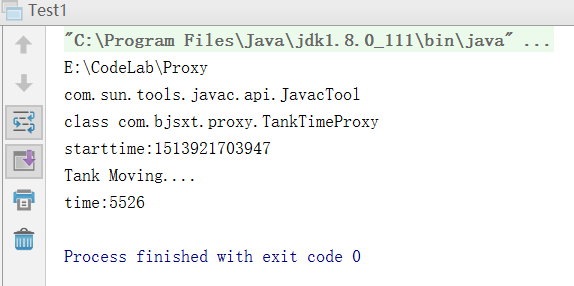
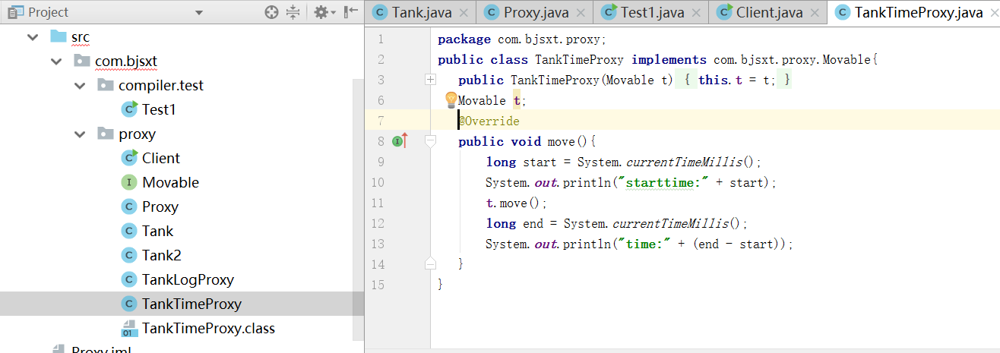
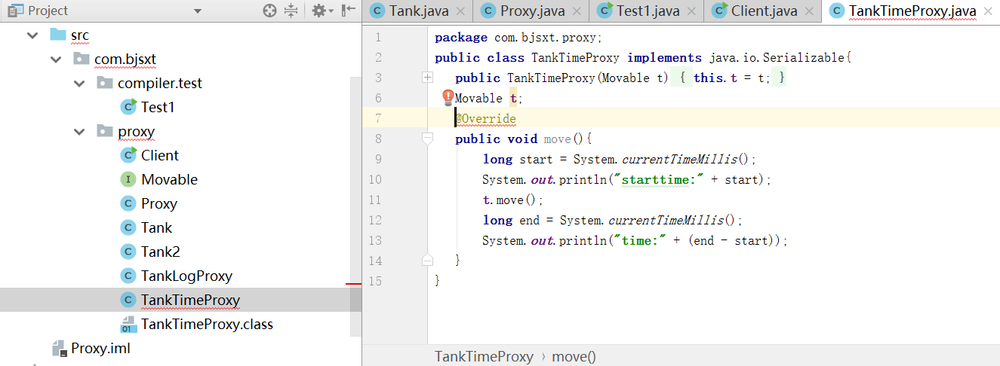
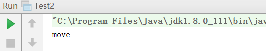
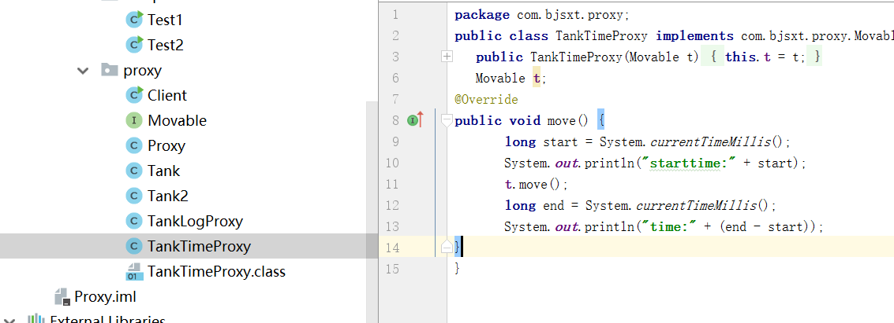
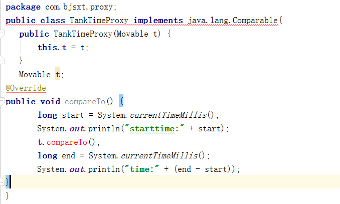
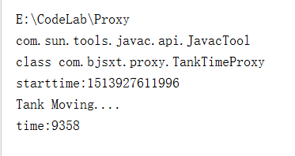
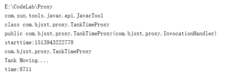

第一课
写一个Movable接口：
写一个类Tank来实现这个接口：
这个类实现了Movable接口中的move方法，在里面打印了一行话，而且让线程睡眠了10s。
现在我们想记录一下这个类的move方法运行的时间，该怎么实现呢？
第一种方法是在Tank类中的move方法上加时间戳，然后计算出运行时间。
第二种方法是继承这个类，然后在调用Tank类的move方法，在方法前后记录时间，做差就可以得出运行时间：
还有一种，就是采用聚合的思想，实现一个Movable接口，在类中加入Tank类的一个成员变量，在自己的move方法中加入对Tank对象的时间计算：
|
|
如果我们还想实现对Tank的日志记录，那么和上面的方法一样：
最初其实我们设计的时候，成员变量都是Tank类型的，但是我们要考虑这样一种需求，就是我们想先记录Tank的运行时间，再记录Tank的日志，那么就需要一个包含一个，所以为了可拓展性，我们将成员变量都定义为Movable类型，这样就可以写出如下的测试代码：
这样就先记录了运行时间，后又记录了日志。
如果我们想先记录日志，后记录运行时间，那么可以很简单的修改:
第二课
前面的代理我们只能对Tank类产生代理，那我们能不能设计一个代理，可以对任何类都代理？
这一次，我们就写测试类，叫Test1，里面呢，是把TankTimeProxy这个类的代码完完全全复制进来，并且做成一个字符串，然后我们利用jdk提供的编译器，来编译我们的这个字符串，使它形成一个二进制文件：
|
|
最后运行起来发现，果真生成了一个TankTimeProxy.class文件：

第四课
刚刚我们将那个字符串编译成了二进制文件，接下来我们想把这个二进制文件load到内存中并且生成新对象：
注意，用ClassLoader去load二进制文件时候，二进制文件必须在classpath下面，而这一次我们的二进制文件并不在classpath，所以我们这次使用URLClassLoader来load。
第五课
上一节中已经把二进制文件load到内存中，并且生成了新对象，现在我们要做的，就是拿到这个对象的构造器，然后创建一个新的实例，去调用这个实例的方法：
运行：

发现也可以去执行我们TankTimeProxy的move方法，实现了和我们之前写的TankTimeProxy相同的代理功能。
第六课
上面我们实现的都是一个写死的接口代理，现在我们想代理任何的接口，不光局限于Movable，怎么做？
我们新创建一个Proxy类，这个类和之前的Test写法几乎一模一样，只是我们在创建一个新代理实例的时候，需要传入一个参数，这个参数指定我们想要给哪一个接口去生成代理：
这样当我们在测试程序中传入一个Movable.class的时候，生成的.java文件和.class文件就会自动实现这个接口：
运行之后生成的.java文件为：

如果我们换成传入Serializable.class，那么结果为：

Ok，这一段很清晰。就是我们可以去实现任何接口的代理，只要我们去传递参数。
有了这个基础，我们可以利用java的反射机制，来获取一个接口中拥有的所有方法，然后动态的为每一个方法去生成代理方法。先来测试一个反射：
|
|
运行：

我们已经获取到了Movable的方法。
下面我们就在我们的Proxy类中对这种方式进行应用：
通过methodString字符串，我们就可以生成所有这个接口的方法的代理，并且最后嵌入总的代码中。我们来运行试一下，看看能不能生成想要的代码：

非常完美！
我们试着换一下接口，去实现Comparable接口的代理代码：

且不管语法对错，总之也可以生成我们想要的代码。
我们想让Proxy代码返回目标对象，然后去执行对象方法，需要做一点小小的修改：
就是我们自己去建立一个文件夹d:/src/com/bjsxt/proxy，然后将fileName和URL进行修改，并且将方法返回类型改成Object，这样就可以去执行代理的move方法了：

第八课
上面已经实现可以为任意接口做代理的功能，那如果我们想动态实现任意的代理，就是说，可以实现记录时间的代理，或者记录日志的代理，等等，这个该怎么动态实现呢？
这一次我们定义一个InvocationHandler接口：
然后需要实现什么功能的代理就去实现这个接口，比如我们去实现一个TimeHandler类：
在这个实现中，我们内部加入了一个Object类的target成员变量，这个变量其实就是我们将来要去为之实现代理的类。
然后重新设计Proxy类：
这一次，我们通过getConstructor方法拿到InvocationHandler类的构造器，然后去传入一个被传入的InvocationHandler参数，这里是h，其实可以就是我们刚刚的TimeHandler，这样就可以构造出一个加了被代理的类的对象。
我们在测试代码中这么写：
|
|
运行一下：

这样就完成了对任意的对象，任意的接口方法，实现任意的代理。
第九课
有了上面的基础，我们来完成一个例子，就是定义一个用户管理的接口，这个管理者有一个add方法，我们现在就是想用上面的方法，为这个类设计一个动态的代理，可以使得这个类在执行add方法之外包上一个事务管理的代理功能。
先设计UserMgr接口：
设计一个UserMgrImpl类来实现这个接口：
接下来我们就要去实现一个事务管理的代理（TransactionHandler.java）：
写一个测试代码，将UserMgrImpl传入到TransactionHandler中，然后将这个代理传入到Proxy的newProxyInstance方法中，构造一个被代理的类，接下来就可以调用其addUser方法了：